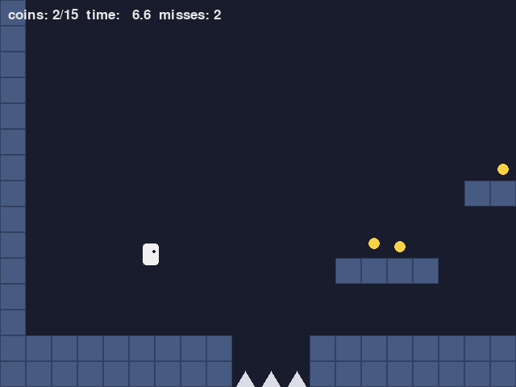
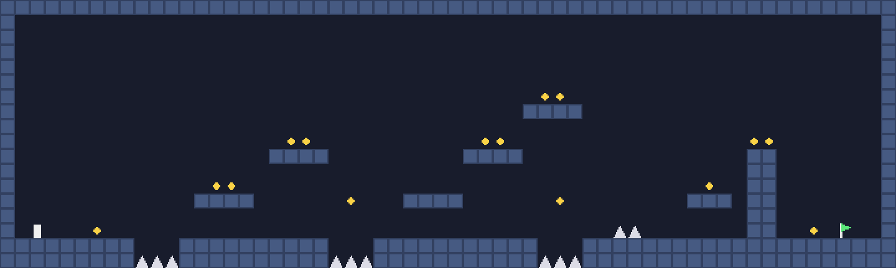

15. 総合演習：2D プラットフォーマーを作る
最後に、本書で扱った道具をまとめて、1 本の小さなゲームを作る。題材は、足場を跳び移りながらゴールを目指す 2D プラットフォーマー（横スクロールのアクションゲーム）である。物理エンジンは使わず、キャラクターの動きはすべて自作の運動で作る。
15.1. 作るゲーム
図 15.1 がゲームの画面、図 15.2 がマップ全体である。


図 15.1 platformer.py の画面

図 15.2 マップ全体（左下の白い四角がスタート、右下の旗がゴール）
ルールは次のとおりである。
左右キー（または A キー・D キー）で走り、スペースキー（または上キー・W キー）でジャンプする。押す長さでジャンプの高さが変わる。
穴に落ちるか、トゲに触れるとミスになり、スタート地点に戻る。
コインは取らなくてもクリアできる。全部で 15 枚ある。
旗に触れるとクリアになる。R キーで最初からやり直せる。
実行するには、platformer.py と collision.py を同じフォルダーに置き、py platformer.py を実行する。
15.2. 全体の構成
platformer.py で使っている道具と、それを扱った章の対応は次のとおりである。
処理 |
使う道具 |
章 |
|---|---|---|
ゲームループ |
固定タイムステップ、描画の補間 |
第 3 章 |
走る・跳ぶ |
加速度の上限、ジャンプの重力と初速、コヨーテタイム、先行入力 |
第 10 章 |
地形との衝突 |
タイルマップとの判定、軸ごとの押し戻し |
第 11 章、第 12 章 |
コイン・ゴール |
円と長方形の判定 |
第 11 章 |
カメラ |
指数関数的減衰による追従、ノイズによる揺れ |
第 8 章、第 9 章 |
着地の伸び縮み |
ばねとダンパー |
第 13 章 |
土ぼこり・火花 |
パーティクル |
第 13 章 |
プログラムは、図 15.3 のように分かれている。Game がゲーム全体の状態を持ち、step で物理を 1 ステップ進め、draw で描画する。物理の計算（update_player と move_and_collide）は、画面や入力の処理から切り離した関数にして、単体テストで確かめられるようにしている。
![digraph classes {
rankdir=LR;
node [shape=box, style="rounded,filled", fillcolor="#eef3fb", color="#3b75c4", fontsize=11];
edge [color="#888888", fontsize=10];
main [label="main\nゲームループ\n（固定タイムステップ）", fillcolor="#fdf0e2", color="#e8862a"];
game [label="Game\nstep / draw\nupdate_camera"];
up [label="update_player\n走る・跳ぶ"];
mc [label="move_and_collide\n地形との衝突"];
level [label="Level\nタイルマップ"];
col [label="collision.py\nAABB、circle_aabb_contact\ntiles_overlapping"];
main -> game [label="STEP ごと"];
game -> up -> mc -> level;
mc -> col; game -> col; level -> col;
}](_images/graphviz-66e1f103120729a6f78e25275f07aa6ecf353d1d.png)
図 15.3 platformer.py の構成
15.3. マップ
マップは、文字列のリストで書く。1 文字が 1 枚のタイル（32×32 ピクセル）に対応する。
文字 |
意味 |
|---|---|
|
壁・床のタイル |
|
トゲ。タイルの下半分だけを衝突判定に使う |
|
コイン |
|
スタート地点 |
|
ゴールの旗 |
|
何も無い |
文字列のリストにしておくと、テキストエディターで地形を描くように編集できる。Level クラスは、タイルの種類を返す tile メソッドと、AABB と重なっている壁のタイルを返す solid_tiles メソッドを持つ。マップの外は壁として扱い、キャラクターがマップの外へ出られないようにしている。
1 def solid_tiles(self, box: AABB) -> list[AABB]:
2 """box と重なっている壁のタイル。"""
3 cols, rows = tiles_overlapping(box, TILE)
4 return [AABB(c * TILE, r * TILE, (c + 1) * TILE, (r + 1) * TILE)
5 for r in rows for c in cols if self.tile(c, r) == SOLID]
15.4. ゲームループ
物理は 1/120 秒の固定タイムステップで進め、描画は直前の 2 ステップの位置を補間して行う（第 3 章）。リスト 15.2 は main 関数のゲームループの部分である。
1running = True
2while running:
3 for event in pygame.event.get():
4 if event.type == pygame.QUIT:
5 running = False
6 elif event.type == pygame.KEYDOWN:
7 if event.key == pygame.K_ESCAPE:
8 running = False
9 elif event.key == pygame.K_r:
10 game = Game()
11 elif event.key in jump_keys:
12 jump_pressed = True
13 keys = pygame.key.get_pressed()
14 move = read_move(keys)
15 jump_held = any(keys[k] for k in jump_keys)
16
17 # 固定タイムステップ: 経過時間を貯め、STEP ごとに更新する
18 frame_time = min(clock.tick(60) / 1000, MAX_FRAME_TIME)
19 accumulator += frame_time
20 steps = 0
21 while accumulator >= STEP and steps < MAX_STEPS:
22 game.step(STEP, move, jump_pressed, jump_held)
23 jump_pressed = False
24 accumulator -= STEP
25 steps += 1
26 accumulator = min(accumulator, STEP)
27
28 game.draw(screen, font, accumulator / STEP, frame_time)
29 pygame.display.flip()
30
ジャンプボタンを「押した瞬間」の入力は、イベントで受け取り、次の物理の更新で 1 回だけ使う。1 フレームに物理の更新が 2 回行われることがあるので、2 回目の更新で同じ入力をもう一度使わないように、使ったら False に戻している。逆に、そのフレームで更新が 1 回も行われなかった場合は、入力は次のフレームまで持ち越される。
15.5. プレイヤーの動き
プレイヤーの動きは、第 10 章の jump.py とほぼ同じである。ジャンプの高さはタイル 3.5 枚分、最高点まで 0.38 秒とし、重力と初速はそこから計算している。高さを 3.5 枚にしているのは、3 枚分の段差を確実に登れるようにするためである。
1def update_player(player: Player, level: Level, dt: float, move: float, jump_pressed: bool,
2 jump_held: bool) -> tuple[bool, bool]:
3 """プレイヤーを 1 ステップ進める。(ジャンプしたか, 着地したか) を返す。"""
4 if move != 0:
5 player.facing = math.copysign(1.0, move)
6 accel = (GROUND_ACCEL if move != 0 else GROUND_DECEL) if player.on_ground else AIR_ACCEL
7 player.velocity.x = approach(player.velocity.x, move * RUN_SPEED, accel * dt)
8
9 if jump_pressed:
10 player.buffer_timer = JUMP_BUFFER_TIME
11 jumped = False
12 if player.buffer_timer > 0 and (player.on_ground or player.coyote_timer > 0):
13 player.velocity.y = -JUMP_SPEED
14 player.on_ground = False
15 player.buffer_timer = player.coyote_timer = 0.0
16 player.squash_velocity -= 6.0 # 縦に伸びる
17 jumped = True
18 player.buffer_timer = max(0.0, player.buffer_timer - dt)
19 player.coyote_timer = max(0.0, player.coyote_timer - dt)
20 if not jump_held:
21 player.velocity.y = max(player.velocity.y, -JUMP_SPEED * JUMP_CUT_SCALE)
22
23 gravity = GRAVITY * (FALL_GRAVITY_SCALE if player.velocity.y > 0 else 1.0)
24 fall_speed = player.velocity.y
25 player.velocity.y = min(player.velocity.y + gravity * dt, MAX_FALL_SPEED)
26 landed = move_and_collide(player, level, dt)
27 if landed:
28 player.squash_velocity += min(fall_speed / 100, 8.0) # 速く落ちるほど大きくつぶれる
29
30 # 伸び縮みは 0 を目標にしたばね
31 player.squash_velocity += (-SQUASH_STIFFNESS * player.squash - SQUASH_DAMPING * player.squash_velocity) * dt
32 player.squash += player.squash_velocity * dt
33 return jumped, landed
jump.py との違いは、縦方向の位置の更新を move_and_collide に任せていることである。move_and_collide は速度に dt を掛けて動かすので、全体としては半陰的オイラー法（第 10 章）になる。そのため、実際の最高点は設計した高さより 1 ステップ分ほど低くなる。test_platformer.py では、その差が 3 % 以内であることを確かめている。
15.6. 地形との衝突
第 12 章で説明した、軸ごとに動かして押し戻す方法で実装している。
1def move_and_collide(player: Player, level: Level, dt: float) -> bool:
2 """x 方向と y 方向を別々に動かし、壁にめり込んだら押し戻す。着地したら True を返す。"""
3 player.position.x += player.velocity.x * dt
4 for tile in level.solid_tiles(player.box):
5 if player.velocity.x > 0:
6 player.position.x = tile.left - PLAYER_WIDTH / 2
7 elif player.velocity.x < 0:
8 player.position.x = tile.right + PLAYER_WIDTH / 2
9 player.velocity.x = 0
10
11 was_on_ground = player.on_ground
12 player.on_ground = False
13 player.position.y += player.velocity.y * dt
14 for tile in level.solid_tiles(player.box):
15 if player.velocity.y > 0:
16 player.position.y = tile.top - PLAYER_HEIGHT / 2
17 player.on_ground = True
18 elif player.velocity.y < 0:
19 player.position.y = tile.bottom + PLAYER_HEIGHT / 2 # 天井に頭をぶつけた
20 player.velocity.y = 0
21 if was_on_ground and not player.on_ground and player.velocity.y >= 0:
22 player.coyote_timer = COYOTE_TIME # 足場から歩いて離れた
23 return player.on_ground and not was_on_ground
x 方向に動かした後、重なっている壁のタイルがあれば、右へ動いていたならタイルの左端に、左へ動いていたならタイルの右端に、プレイヤーの端をそろえる。y 方向も同様で、下へ動いていて床にそろえた場合は着地とする。
着地の判定には工夫が要る。床の上に立っている間も、重力によって毎ステップ少しだけ下向きの速度が付き、床にわずかにめり込んでから押し戻される。このときに on_ground を True にしている。足場の端から歩いて離れた瞬間（前のステップでは床の上にいたが、今は床が無い）には、コヨーテタイムを開始する。
1 ステップの移動量がタイルの大きさより十分小さいので、すり抜けは起きない。落下の最高速度を 720 ピクセル毎秒にしており、1/120 秒では 6 ピクセルしか動かない（第 11 章）。
15.7. コイン・トゲ・ゴール
Game.step では、プレイヤーを動かした後に、コイン・トゲ・ゴールとの判定を行う。コインとゴールは円、プレイヤーは AABB として、collision.py の circle_aabb_contact で判定する。
1 def step(self, dt: float, move: float, jump_pressed: bool, jump_held: bool) -> None:
2 """固定タイムステップの 1 回分の更新。"""
3 self.previous_position = Vector2(self.player.position)
4 if self.cleared:
5 return
6 self.time += dt
7 jumped, landed = update_player(self.player, self.level, dt, move, jump_pressed, jump_held)
8 if jumped or landed:
9 self.spawn_dust(self.player.box.bottom)
10
11 box = self.player.box
12 for coin in self.coins[:]:
13 if circle_aabb_contact(coin, COIN_RADIUS, box):
14 self.coins.remove(coin)
15 self.spawn_sparks(coin)
16 if self.level.touches_spike(box) or self.player.position.y > self.level.height:
17 self.deaths += 1
18 self.trauma = 1.0
19 self.spawn_sparks(self.player.position)
20 self.player = Player(Vector2(self.start))
21 self.previous_position = Vector2(self.start)
22 if circle_aabb_contact(self.goal, TILE / 2, box):
23 self.cleared = True
24
25 for p in self.particles:
26 p.velocity.y += 600 * dt
27 p.position += p.velocity * dt
28 p.life -= dt
29 self.particles = [p for p in self.particles if p.life > 0]
トゲの衝突判定の形状は、見た目の三角形より一回り小さい長方形にしている（Level.touches_spike）。トゲの先端をかすっただけでミスになると、理不尽に感じられるからである。逆に、コインの判定は見た目どおりにしている。取れる物の判定は大きめ、ミスになる物の判定は小さめにするのが、遊びやすさの基本である。
15.8. カメラ
カメラは、プレイヤーの位置を damp（第 8 章）で追いかける。さらに、プレイヤーが向いている方向の先を少し多く見せる（先読み）。先読みの量も damp で変化させているので、向きを変えたときにカメラが急に動かない。
1 def update_camera(self, frame_time: float, player_drawn: Vector2) -> Vector2:
2 """カメラを追従させ、揺れを加えた最終的なカメラの位置を返す（描画のフレームごとに呼ぶ）。"""
3 self.look_ahead = damp(self.look_ahead, self.player.facing * LOOK_AHEAD, LOOK_AHEAD_RATE, frame_time)
4 target = player_drawn + Vector2(self.look_ahead, -TILE)
5 self.camera.x = damp(self.camera.x, target.x, CAMERA_FOLLOW_RATE, frame_time)
6 self.camera.y = damp(self.camera.y, target.y, CAMERA_FOLLOW_RATE, frame_time)
7 # マップの外が映らないように、カメラの中心の範囲を制限する
8 self.camera.x = max(SCREEN_WIDTH / 2, min(self.level.width - SCREEN_WIDTH / 2, self.camera.x))
9 self.camera.y = max(SCREEN_HEIGHT / 2, min(self.level.height - SCREEN_HEIGHT / 2, self.camera.y))
10 self.trauma = max(0.0, self.trauma - SHAKE_DECAY * frame_time)
11 shake = MAX_SHAKE * self.trauma ** 2
12 offset = Vector2(perlin_noise(self.time * SHAKE_FREQUENCY, 1), perlin_noise(self.time * SHAKE_FREQUENCY, 2))
13 return self.camera + offset * shake
マップの外が映らないように、カメラの中心の範囲を制限している。ミスしたときは trauma を 1 にし、その 2 乗に比例した大きさで、パーリンノイズによる揺れを加える（第 9 章）。カメラは描画のフレームごとに更新するので、damp にはフレームの経過時間を渡している。
この platformer.py のカメラは平行移動しかしないので、第 6 章の行列は使わず、カメラの左上の座標を引くだけで画面座標に変換している。回転やズームが必要になったら、camera_demo.py のビュー行列に置き換えればよい。
15.9. 演出
着地したときに、プレイヤーが横につぶれてから元に戻る演出を、ばねとダンパー（第 13 章）で作っている。伸び縮みの量 squash を、目標 0 のばねで動かす。着地した瞬間に、落下の速さに応じた速度を squash_velocity に加えると、つぶれてから少し揺れて元に戻る。ジャンプした瞬間には逆向きの速度を加えて、縦に伸ばしている。描画では、横に広げた分だけ縦を縮めて、面積がほぼ変わらないようにしている。
ジャンプと着地のときには足元に土ぼこりを、コインを取ったときとミスしたときには火花を、パーティクルで出している。どちらも見た目だけの演出で、ゲームの結果には影響しない。こうした演出は、ゲームの世界ではジュースと呼ばれ、操作の手応えを大きく高める。
15.10. テスト
test_platformer.py では、画面を使わずに次のことを確かめている。
床に着地すること、落下の速さが上限を超えないこと
壁をすり抜けないこと
ジャンプが設計した高さにほぼ届くこと、ボタンを早く離すと低く跳ぶこと
コヨーテタイムの間はジャンプでき、過ぎるとできないこと
着地の直前に押したジャンプが実行されること（先行入力）
コインを取れること、トゲでスタートに戻ること、ゴールでクリアになること
1py -m unittest test_platformer
ジャンプの高さや重力の値を調整したときに、テストを実行すれば「3 枚分の段差を登れなくなった」といった問題にすぐ気付ける。
15.11. 改造のアイデア
本書の内容を使って、次のような改造に挑戦してみてほしい。
動く足場: イージング関数（第 8 章）で往復させ、乗っている間はプレイヤーを一緒に動かす。
敵: 一定の速さで左右に歩き、壁に当たると向きを変える敵を作る。上から踏んだら倒せるようにする（法線の向きで踏んだか横から当たったかを判定する）。
飛び道具: 向いている方向に弾を撃ち、レイキャスト（第 11 章）で壁や敵に当たったかを調べる。
坂道: 斜めのタイルを作り、線分との判定（第 11 章）で坂の上を歩けるようにする。
ばねの台: 乗ると大きく跳ね上げる台を作る。何ピクセルの高さまで跳ばしたいかから、初速を逆算する（第 10 章）。
15.12. 次のステップ
本書では、ゲームの動きを作る数学と物理を中心に扱った。さらに学びを進めるなら、次のような分野がある。
経路探索とゲーム AI: 敵がマップの中で目標への道を探す A* アルゴリズムや、行動を切り替える状態機械。グラフの探索と、距離の見積もり（ヒューリスティック）を使う。
3D のゲーム: 第 6 章・第 7 章の内容を 3D に広げる。3D の描画の仕組みは「コンピューターグラフィックス入門」で扱っている。
ゲームエンジン: Unity や Godot を使うと、本書で自作した仕組み（ベクトル、行列、物理、衝突判定）の多くが最初から用意されている。仕組みを理解したうえで使えば、思いどおりに動かないときに原因を突き止めやすい。ゲームエンジンの選び方は「ゲーム作成入門」で扱っている。
本書で扱った内容をさらに詳しく学ぶための文献は、付録 C 参考文献にまとめている。